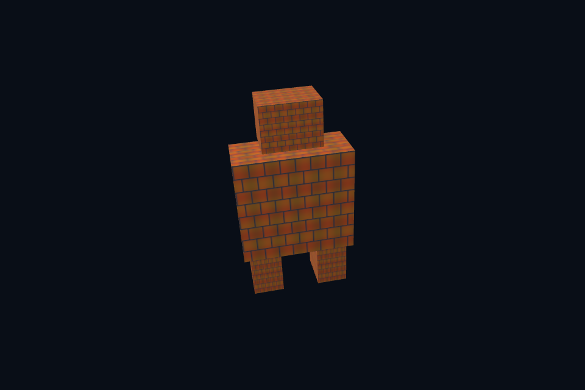

vk36_integration · 模型纹理 mip MSAA 综合
54 课目录
目的与实际执行
综合例通过 SceneVk 的显式配置连接资产、纹理与目标，保持可追踪资源拥有者。resize 重建时配置回调重建所需引用。当前窗口仍按帧等待，计算资源环证明两槽原则而非替代完整多帧呈现引擎。
本程序有独立实验选择与验证路径，公共实现集中在 advanced_labs.cpp。设备/API 检查、数值 compute 与图形渲染采用不同证据；不是每个程序都会弹出窗口。
构建和运行
cmake --preset vulkan-native
cmake --build --preset vulkan-native-debug --target vk36_integration --parallel 4
.\Vulkan\native\build\bin\Debug\vk36_integration.exe
深入学习：数据、接口与执行
本课的真实源码切片
来自 Vulkan/native/common/advanced_labs.cpp，第 626—669 行；这是现有实现的局部摘录，末尾可能处于函数中间，不是可单独编译的完整程序。
int graphicsLab(int argc, char** argv, const LabOptions& options) {
int id = options.id, mode = id == 27 ? 3 : id == 29 || id == 53 ? 4 : 6;
Geometry mesh;
if (id == 21)
mesh = staticAsset(options.directory / "assets/models/vase.obj");
if (id == 22 || id == 36)
mesh = staticAsset(options.directory / "assets/models/robot.gltf");
if (id == 29)
mesh = particleGeometry();
if (id == 52 || id == 53) {
mesh = geometry(4);
for (auto& vertex : mesh.vertices) {
vertex.normal =
id == 53 ? glm::vec3(1 - vertex.uv.x, vertex.uv.y, 1) : glm::vec3(0, 0, 1);
vertex.uv *= 4.f;
}
if (id == 52)
for (uint32_t i = 0; i < mesh.vertices.size(); ++i)
mesh.indices.push_back(i);
}
NativeRenderOptions render;
render.captureStem = "vk_lab_" + std::to_string(id);
render.redOnly = id == 43;
render.cull = id == 50 ? VK_CULL_MODE_BACK_BIT : VK_CULL_MODE_NONE;
if (!mesh.vertices.empty())
render.mesh = &mesh;
if (id == 20 || id == 36)
render.samples = VK_SAMPLE_COUNT_4_BIT;
render.setup = [=](SceneVk& scene) {
auto state = std::make_shared<RenderState>();
scene.extension = state;
if (id == 17 || id == 19 || id == 35 || id == 36 || id == 41 || id == 52) {
auto pixels = imageFile(options.directory / "assets/textures/albedo.png");
state->texture = std::make_unique<GpuTexture>(scene.c,
std::move(pixels),
id == 19 || id == 36 || id == 41,
id == 35 || id == 36,
id == 52);
state->texture->attach(scene, id == 41);
}
if (id == 20 || id == 36) {
VkPhysicalDeviceProperties p{};
vkGetPhysicalDeviceProperties(scene.c.physical, &p);
require((p.limits.framebufferColorSampleCounts & p.limits.framebufferDepthSampleCounts &
同主题跨 API 导航
先预测，再验证
选择阴影、IBL 或骨骼动画之一，先写资源表、pass 依赖图、中间调试视图和验收条件，再实现。
参考推导：原生/DX12 当前完成静态模型、mip/MSAA、直接光 PBR 和计算扩展；完整 glTF 材质、skin/动画、IBL、SSAO 等仍需单独工程实现与验证。清楚标记边界比扩大功能名列表更有价值。
验证与边界
运行 --smoke 执行有限自动检查。数值实验读取实际 GPU 结果，图形实验检查非空图像并可查看读回。交互重建与性能还需额外证据；窗口 renderer 当前保留串行等待，双槽计算实验不会被描述为完整多帧呈现引擎。
实际画面
